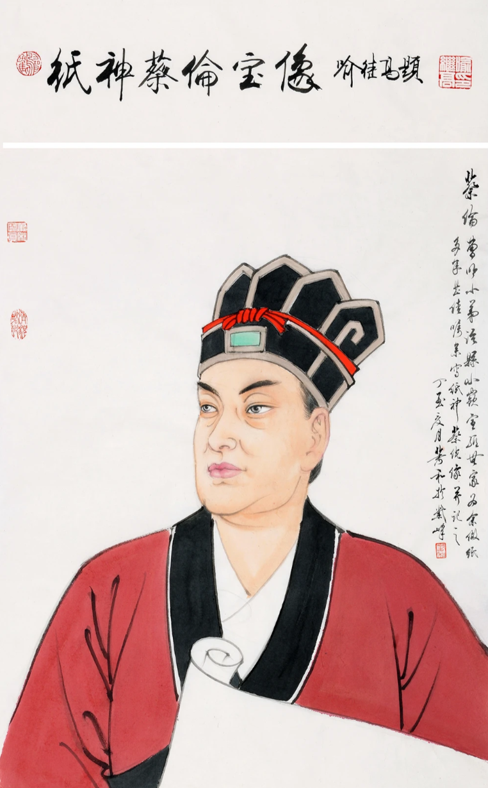

发明家与历史地位

纸出现以前，人们怎么记录？
在纸张普及之前，中国有甲骨、金石、竹简、木牍，西方有泥板、羊皮纸等。它们要么笨重难携，要么昂贵稀少，知识难以「随身带走」，更难以大规模流通。
西汉的纸与东汉的改进
考古发现表明，西汉已有原始植物纤维纸，但质地较粗、用途有限。东汉蔡伦（约公元 63—121 年）系统总结工艺，用树皮、麻头、破布、旧渔网等易得原料制浆抄纸，提高了成品匀度与强度，史称「蔡侯纸」。他常被视为造纸术工程化与推广的关键人物，而非「世界上第一张纸」的唯一发明者——科学史更强调集体经验与持续改良。
四大发明与世界影响
造纸术与指南针、火药、印刷术并称中国古代四大发明。纸张沿陆上与海上商路外传，降低了书写与行政、宗教、学术活动的成本，为后来学校、图书馆、近代出版业的出现奠定了物质基础，也被视为人类文明史上的重要节点。
- 教育公平：课本与讲义成本下降，更多人能识字读书。
- 档案与法律：契约、律令、地图便于存档与传递。
- 跨文化交流：翻译与抄本使思想得以远距离对话。